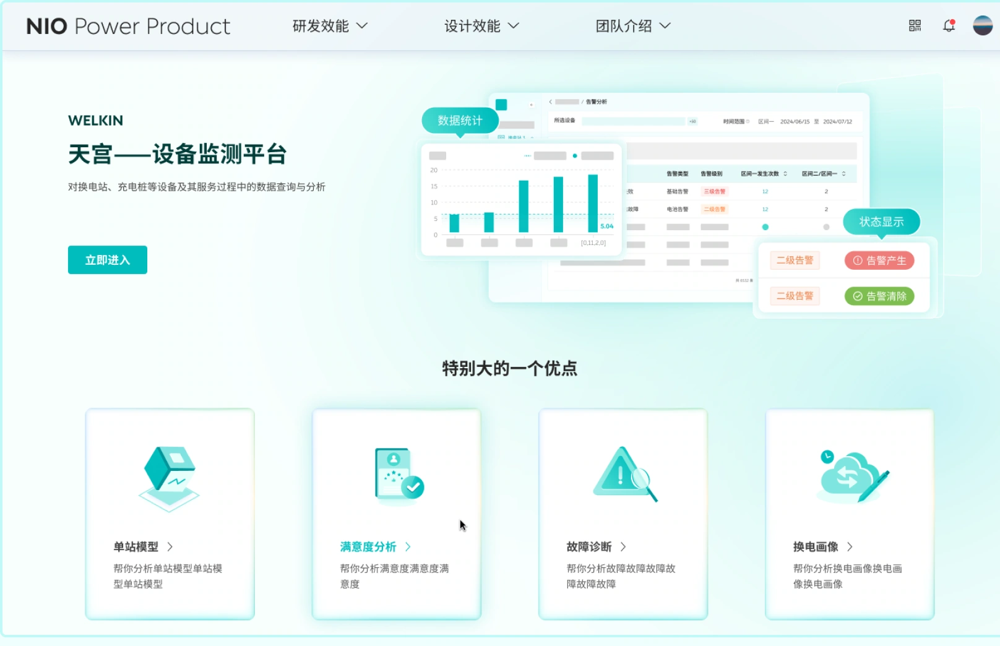
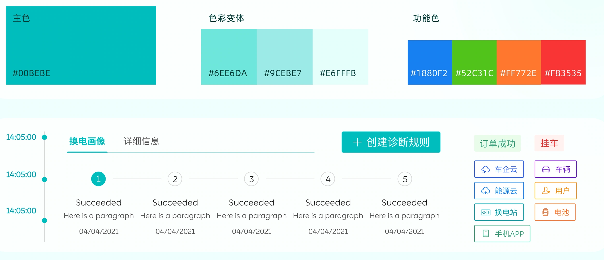
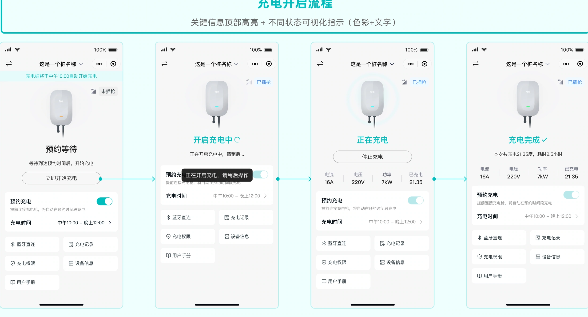

NIO Energy · Enterprise web
Making battery-swap issues easier to diagnose
A redesigned order dashboard and detail view that help operations teams find an order and pinpoint the step that went wrong.
Order dashboard, step details and status component specifications.

Interactive reconstruction
Which step raised an alert in a successful swap?

Open a sample order from the list
The status column summarises each order. Open the sample detail to inspect its execution history.

Inspect a successful result
The list now shows only successful orders. Open the detail example to check whether a step raised an alert during execution.

Find the mechanical swap stage
The header says the order succeeded. Inspect the mechanical swap stage marked in the stage strip.
Locate battery transfer
Battery transfer is marked in both colour and text within the stage. Select it to inspect the record.

Read the step and alert together
In the source design, battery transfer has a level-two alert and the overall order succeeded. Preserving both states makes the incident traceable.
Design decision
An order outcome and the condition of an individual step answer different questions. The list supports the first. The stage strip, timeline and alert must stay connected to answer the second.
What I would check
Ask an operator for the order outcome, the affected stage and its specific step. Each answer tests a different level of the information hierarchy.
Design approach
When a battery-swap order runs into an issue, how can operations staff find the exact step from the order list?
- Find the orderNarrow the search and confirm its status
- Identify the stageUse top-level steps to locate the affected stage
- Inspect the detailsCheck substeps, timestamps, and alerts
Define the problem from the investigation task
At NIO Energy, I helped iterate on the battery-swap diagnostics feature of its equipment-monitoring platform. An investigation required two decisions: finding the target order in a large set of records, and understanding exactly where its execution went wrong.
The old view displayed all levels of steps in one chronological sequence. It preserved the timeline but made specific stages hard to find in a long page. I framed the redesign around two observable tasks: finding the correct order and identifying the affected stage once inside its detail view.
Design each view around its task
The dashboard helps users find the right order. The detail view helps them understand why it failed. I designed the two views separately because they need different levels of detail and different ways of organising information.
- Filter first, then scan status
- Time, device type, order ID, and status can be combined. Staff who know the order ID can search directly. With less information, they can narrow the results first and scan status labels.
- Keep the sequence and make stages easier to find
- The detail view retains the timeline and separates top-level stages from their substeps. Staff can jump to the relevant stage, then read its timestamps, status, and alerts.


Deliverables and validation approach
Deliverables included the order dashboard, the workflow detail view, and guidance for status components. Labels keep the same meanings across the list and detail views. I also contributed to the home charging mini program, covering start-up, active charging, completion, and errors.
- How to check whether the design works
- Ask operations staff to find an order by known ID, then use filters to find a failed order and identify the affected step. Record how long it takes, whether they pick the right step, and whether they need to return to the list.

